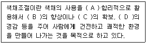
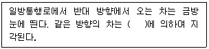
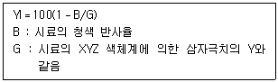
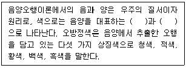
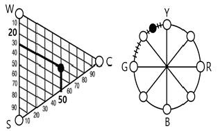

컬러리스트기사 (2022-03-05 기출문제)
1과목: 색채심리 마케팅
1. 분산의 제곱근으로 분산의 특성을 모두 가지고 있을 뿐만 아니라 관찰값이나 대푯값과 동일한 단위로 사용할 수 있어 일반적인 분산도의 척도로 널리 사용되고 있는 것은?
- 평균편차
- 중간편차
- 표준편차
- 정량편차
(정답률: 80%)

2. 다음 중 소비자의 구매심리 과정이 아닌 것은?
- A(Action)
- I(Interest)
- O(Opportunity)
- M(Memory)
(정답률: 64%)
3. 사람마다 동일한 대상의 색채를 다르게 지각할 수 있다. 이러한 개인별 차이를 갖게 하는 요인이 아닌 것은?
- 물체에서 나오는 빛의 특성
- 생활습관과 행동 양식
- 지역의 문화적인 배경
- 지역의 풍토적 특성
(정답률: 72%)
4. 최근 전통적인 의미의 소비자 심리 과정에서 벗어나 정보 검색을 통해 제품을 탐색하고, 구매 후에는 공유의 과정을 거치는 소비자 구매 패턴 모델은?
- AIDMA
- EKB
- AIO
- ASIAS
(정답률: 34%)
5. 다음 ( ) 안에 들어갈 단어를 순서대로 옳게 나열한 것은?

- 기능적, 작업능률, 안정성, 피로감
- 기능적, 경제성, 안전성, 오락성
- 경제적, 작업능률, 명쾌성, 피로감
- 개성적, 경제성, 안정성, 피로감
(정답률: 80%)
6. 사용된 색에 따라 우울해 보이거나 따듯해 보이거나 고가로 보이는 등의 심리적 효과는?
- 색의 간섭
- 색의 조화
- 색의 연상
- 색의 유사성
(정답률: 84%)
7. 시장의 유행성 중 수용기 없이 도입기에 제품의 수명이 끝나는 유형으로 옳은 것은?
- 플로프(flop)
- 패드(fad)
- 크레이즈(craze)
- 트렌드(trend)
(정답률: 40%)
8. 환경색채에 대한 설명으로 옳은 것은?
- 경관에 영향을 주는 인공설치물은 환경색채에 포함되지 않는다.
- 인공 환경에 가장 많은 영향을 받는다.
- 자연 기후나 자연 지형에 영향을 많이 받는다.
- 자연환경인 기후와 열광에 영향을 준다.
(정답률: 48%)
9. 마케팅 기법 중 시장을 상이한 제품을 필요로 하는 독특한 구매집단으로 분할하는 방법은?
- 시장 표적화
- 시장 세분화
- 대량 마케팅
- 마케팅 믹스
(정답률: 32%)
10. 지역적인 특성에 따른 소비자의 자동차 색채선호 특성을 조사하고자 한다. 가장 적합한 표본추출 방법은?
- 단순무작위추출법
- 체계적표분추출법
- 층화표본추출법
- 군집표분추출법
(정답률: 39%)
11. 색채와 제품의 라이프스타일 단계별 특성을 가장 옳게 설명한 것은?
- 쇠퇴기에는 고객의 요구를 반영하지 않고 럭셔리, 내추럴과 같은 이미지 표현이 요구된다.
- 성숙기에는 기능과 기본 품질이 거의 만족되어 원색을 선호하게 된다.
- 성장기에는 다른 제품과의 차이가 느껴지지 않도록 경쟁 사와 유사한 색상을 추구한다.
- 도입기에는 디자인보다는 기능이 중시되므로 소재의 색을 그대로 활용한 무채색이 주를 이룬다.
(정답률: 38%)
12. 마케팅에서 색채의 기능에 대한 설명으로 틀린 것은?
- 홍보 전략을 위해 기업 컬러를 적용한 신제품을 출시하였다.
- 색채 커뮤니케이션은 측색 및 색채관리를 통하여 제품이 가진 이미지나 브랜드의 의미를 전달한다.
- 상품 자체는 물론이고 브랜드의 광고에 사용된 색채는 소비자의 구매력을 자극한다.
- 마케팅 목표를 달성하기 위해 색채를 적합하게 구성하고 이를 장기적, 지속적으로 개선해 나간다.
(정답률: 39%)
13. 색채마케팅 전략 수립 단계 중 자료의 수집에 관한 설명이 옳은 것은?
- 1단계로 먼저 경쟁 관계에 있는 브랜드의 매출, 제품디자인, 마케팅, 전략의 변화추이를 파악하여 포지셔닝을 분석한다.
- 2단계로 자사 브랜드를 중심으로 사회, 문화, 소비자의 라이프스타일 등의 동향을 파악하고 키워드를 도출하고 이미지 맵핑을 한다.
- 3단계로 과거 몇 시즌 동안 나타났던 디자인 트렌드의 변화 추이를 분석하여 미래에 나타나게 될 트렌드를 예측한다.
- 마케팅 목표를 달성하기 위해 색채를 적합하게 구성하고 이를 장기적, 지속적으로 개선해 나간다.
(정답률: 40%)
14. 모더니즘의 등장과 함께 주목을 받게 된 색은?
- 빨강과 자주
- 노랑과 파랑
- 하양과 검정
- 주황과 자주
(정답률: 76%)
15. 소비자 의사결정 과정에서 대안평가 시 평가기준의 특성에 대한 설명으로 틀린 것은?
- 평가기준은 제품 유형과 소비자가 처한 상황에 따라 달라 진다.
- 평가기준은 객관적일 수도 있고 주관적일 수도 있다.
- 평가기준의 수는 관여도와 상관없이 일정하게 정해져 있다.
- 평가기준은 제품 구매동기에 따라 다르게 작용된다.
(정답률: 67%)
16. 색의 선호도에 대한 설명이 틀린 것은?
- 색에 대한 일반적인 선호 경향과 특정 제품에 대한 선호 색은 동일하다.
- 선호도의 외적, 환경적인 요인은 문화적, 사회적 요인으로 구분할 수 있다.
- 선호도의 내적, 심리적 요인으로는 개인적 요인이 중요 하게 작용된다.
- 제품의 특성에 따라서 선호되는 색채는 고정된 것이 아니다.
(정답률: 66%)
17. 색채와 시간에 대한 속도감에 영향을 미치는 것이 아닌 것은?
- 난색계열의 색은 속도감이 빠르고, 시간은 길게 느껴진다.
- 단파장은 속도감이 느리고, 시간은 짧게 느껴진다.
- 속도감은 색상과 명도의 영향이 크다.
- 한색계열의 색은 대합실이나 병원 등 오래 기다리는 장소에 적합하다.
(정답률: 48%)
18. 제품수명주기에 따른 제품의 색채계획에 대한 설명이 옳은 것은?
- 도입기에는 시장저항이 강하고 소비자들이 시험적으로 사용하는 시기이므로 제품의 의미론적 해결을 위한 다양한 색채를 호기심을 유도하는 것이 좋다.
- 성장기에는 기술개발이 경쟁적으로 나타나는 시기이므로 기능주의적 성격이 드러나는 무채색을 사용하는 것이 좋다.
- 성숙기에는 기능주의에서 표현주의로 이동하는 시기이므로 세분화된 시장에 맞는 색채의 세분화와 다양화가 이루어져야 한다.
- 쇠퇴기에는 더 이상 기술개발이 이루어지지 않으므로 화려한 색채를 사용하여 주의를 환기하는 것이 좋다.
(정답률: 31%)
19. 색채마케팅의 과정으로 순서가 바른 것은?
- 색채정보화 → 판매촉진 전략 → 색채기획 → 정보망 구축
- 색채정보화 → 색채기획 → 판매촉진 전략 → 정보망 구축
- 색채기획 → 정보망 구축 → 판매촉진 전략 → 색채정보화
- 색채기획 → 색채정보화 → 정보망 구축 → 판매촉진 전략
(정답률: 36%)
20. 시장세분화의 기준 중 행동분석적 속성의 변수는?
- 사회계층
- 라이프스타일
- 상표 충성도
- 개성
(정답률: 24%)
2과목: 색채디자인
21. 화학실험실에서 사용하는 가스 종류에 따라 용기의 색을 다르게 사용하는 것과 관련된 색채원리는?
- 색의 현시
- 색의 상징
- 색의 혼합
- 색의 대비
(정답률: 66%)
22. 인터랙티브 아트(Interactive Art)의 설명으로 가장 적합한 것은?
- 정보를 한 방향이 아닌 상호작용으로 주고받는 것
- 컴퓨터가 만드는 가상세계 또는 그 기술을 지칭하는 것
- 문자, 그래픽, 사운드, 애니메이션과 비디오를 결합한 것
- 그래픽에 시간의 축을 더한 것으로 연속적으로 움직이는 것과 같은 이미지를 제작하는 것
(정답률: 40%)
23. 질감을 선택할 때 고려해야 할 점으로 비교적 거리가 먼 것은?
- 촉감
- 빛의 반사·흡수
- 색조
- 형태
(정답률: 38%)
24. 색채계획의 목적과 거리가 먼 것은?
- 질서를 부여하고 통합한다.
- 개성보다는 통일성을 부여한다.
- 인상을 부여한다.
- 영역을 구분한다.
(정답률: 36%)
25. 17~18세기 유럽에서 유행한 예술양식으로서 프랑스의 베르사이유 궁전 같은 건축물을 대표적으로 들 수 있는 양식은?
- 르네상스
- 바로크
- 로코코
- 신고전주의
(정답률: 42%)
26. 환경디자인의 영역과 거리가 먼 것은?
- 자연보호 포스터
- 도시계획
- 조경 디자인
- 실내 디자인
(정답률: 57%)
27. 디자인의 원리인 조화에 대한 설명 중 틀린 것은?
- 디자인의 조화는 2개 이상의 요소 또는 부분의 상호관계가 서로 분리되거나 배척하지 않는 상태를 말한다.
- 유사조화는 변화의 다른 형식으로 서로 다른 부분의 조합에 의해서 생긴다.
- 디자인의 조화는 여러 요소들의 통일과 변화의 정확한 배합과 균형에서 온다.
- 조화는 크게 유사조화와 대비조화로 나눌 수 있다.
(정답률: 53%)
28. 인쇄물에서 핀트가 잘 맞지 않았을 때 일어나는 눈의 아른거림 현상은?
- 실루엣(silhouette)
- 무아레(moire)
- 패턴(pattern)
- 착시(optical illusion)
(정답률: 49%)
29. 색채계획에 사용되는 방법이 아닌 것은?
- 소비자 색채 설문 조사
- 시네틱스법
- 소비자 제품 이미지 조사
- 이미지 스케일
(정답률: 50%)
30. 예술 사조와 주로 표현된 색채의 연결이 틀린 것은?
- 플럭서스 : 부드럽고 유연한 느낌의 따듯한 색조 사용
- 아르누보 : 파스텔 계통의 부드러운 색조 사용
- 데스틸 : 무채색과 빨강, 노랑, 파랑의 순수한 원색 사용
- 팝아트 : 어두운 톤 위에 혼란한 강조색 사용
(정답률: 47%)
31. 빅터 파파넥이 규정지은 복합기능에 속하지 않는 것은?
- 방법
- 형태
- 미학
- 용도
(정답률: 47%)
32. 아르누보에 대한 설명 중 틀린 것은?
- 담쟁이덩굴, 수선화 등의 장식문양을 즐겨 이용했다.
- 철, 유리 등의 새로운 재료를 사용한 것도 특색이었다.
- 역사적 양식에서 탈피해 새로운 조형미 창조에 도전하였다.
- 영국에서 시작되었으며 프랑스에서는 유겐트 스틸이라 칭하였다.
(정답률: 42%)
33. 병치혼색 현상을 이용한 점묘화법을 이용하여 색채를 새롭게 도구화한 예술은?
- 큐비즘
- 사실주의
- 야수파
- 인상파
(정답률: 38%)
34. 환경디자인을 실행함에 있어서 유의할 점과 거리가 먼 것은?
- 사회성, 공통성, 공익성 함유 여부
- 환경색으로 배경적인 역할의 고려
- 사용조건의 적합성
- 재료의 자연색 배제
(정답률: 74%)
35. 현대 디자인사에서 형태와 기능의 관계에 대해 '형태는 기능을 따른다.'라고 말한 사람은?
- 월터 그로피우스
- 루이스 설리반
- 필립 존슨
- 프랑크 라이트
(정답률: 50%)
36. 인간의 생명과 건강에 밀접하게 관계된 특징으로 근대 이후 많은 재해를 통하여 부상된 조건 중의 하나는?
- 안전성
- 독창성
- 합목적성
- 사용성
(정답률: 67%)
37. 다음 ( ) 안에 들어갈 말로 옳은 것은?

- 폐쇄성
- 근접성
- 지속성
- 유사성
(정답률: 32%)
38. 실내 공간의 색채계획에 대한 설명 중 틀린 것은?
- 작은 방은 고명도의 유사색을 사용하면 더 커 보이게 만들 수 있다.
- 어린이 방은 주조색을 중간 색조로 하고 강조색을 원색 으로 사용하면 흥미를 유발할 수 있다.
- 작은 방은 강한 색 대조를 사용하면 공간을 극적으로 커보이게 하는 경향이 있다.
- 사무실은 고명도, 저채도의 중성색을 사용하면 안정감을 준다.
(정답률: 48%)
39. 미용색채계획 과정에서 가장 중요하며 처음으로 실시되는 단계는?
- 주조색, 보조색, 강조색의 결정
- 대상의 위생검증
- 이미지맵 작성
- 대상의 특징분석
(정답률: 57%)
40. 디자인에 대한 설명 중 틀린 것은?
- 디자인의 목표는 미적인 것과 기능적인 것을 제품으로 통합하는 것이다.
- 안전하며 사용하기 쉽고 아름답고 쾌적한 생활환경을 창조하는 조형행위이다.
- 디자인은 인간의 삶을 풍요롭게 하는 영역이며 오늘날 다양한 매체에 이르기까지 발전을 거듭하고 있다.
- 디자인은 자연적인 창작행위로서 기능적 측면보다는 미적 추구를 목적으로 한다.
(정답률: 63%)
3과목: 색채관리
41. 다음 중 특수 안료가 아닌 것은?
- 형광안료
- 인광안료
- 천연유기안료
- 진주광택안료
(정답률: 48%)
42. 육안 조색과 비교할 때 CCM 조색에 대한 설명으로 틀린 것은?
- 조색 정보 공유가 용이하다.
- 메타메리즘 예측이 가능하다.
- 색채품질관리가 용이하다.
- 조색 시 광원이 중요하다.
(정답률: 42%)
43. 정확한 색채 측정을 위한 조건을 설명하는 것으로 적합하지 않는 것은?
- 필터식 방식이나 분광식 방식의 모든 색채계의 기준이 되는 백색 기준물(white reference)의 철저한 관리는 필수적이다.
- 필터식 색채계의 경우는 백색 기준물의 색좌표를 기준으로 색채를 측정한다.
- 분광식 색채계의 경우는 분광반사율을 측정하므로 백색 기준물의 분광반사율을 기준으로 한다.
- CIE에서는 빛의 입사 방향과 관측 방향을 동일하게 일치 하도록 규정하고 있다.
(정답률: 44%)
44. 색온도와 자연광원 및 인공광원에 관한 설명으로 잘못된 것은?
- 색온도는 광원의 실제 온도이다.
- 흑체는 온도에 따라 정해진 색의 빛을 내므로, 광원이 흑체와 같은 색의 빛을 내는 경우 이때의 흑체의 온도를 그 광원의 색온도로 정리하고 절대온도 K로 표시한다.
- 낮은 색온도는 따뜻한 색에 대응되고 높은 색온도는 차가운 색에 대응된다.
- 흑체는 외부에너지를 모두 흡수하는 이론적 물체로서 온도가 낮은 때는 눈에 안 보이는 적외선을 띄다가 온도가 높아지면서 붉은색, 오렌지색, 노란색, 흰색으로 바뀌다가 마침내는 푸른빛이 도는 흰색을 띄게 된다.
(정답률: 52%)
45. 3자극치 직독 시 광원 색채계를 이용하여 광원색을 특정하는 경우에 대한 설명으로 틀린 것은?
- 계기의 지시로부터 3자극치의 X, Y, Z 혹은 X10, Y10, Z10 도는 이들의 상대치를 구한다.
- 직독식 색채계는 루터(Luther) 조건을 되도록 만족시켜야 한다.
- 측정의 기하학적 조건 ø 및 조건 L의 경우, 적분구나 결상광학계 등의 입력광학계의 분광분포 전달 특성을 제외 하고 루터 조건을 만족할 필요가 있다.
- 표준 광원 및 측정대상 광원을 동일한 기하학적인 조건 으로 점등하고, 각각에 대한 직독식 색채계의 3자극치의 지시값을 읽는다.
(정답률: 26%)
46. 염료의 특성에 대한 설명이 틀린 것은?
- 황화염료 : 알카리성에 강한 셀룰로오스 섬유의 염색에 사용하고 견뢰도가 약한 것이 단점이다.
- 반응성염료 : 염료분자와 섬유분자의 화학적 결합으로 염색되므로 색상이 선명하고 견뢰도가 강하다.
- 염기성염료 : 색이 선명하고 착색력이 우수하지만 견뢰도가 약하다.
- 배트염료 : 소금이나 황산소다를 첨가하여 염착시키고 무명, 마 등의 식물성 섬유의 염색에 좋다.
(정답률: 35%)
47. 조색과 관련한 설명으로 틀린 것은?
- 고명도 색채 조색 시 극히 소량으로도 색채에 많은 영향을 줄 수 있으므로 유의하여야 한다.
- 메탈릭이나 펄의 입자가 함유된 조색에는 금속입자나 펄입자에 따라 표면반사가 일정하지 못하다.
- 형광성이 있는 색채 조색 시 분광분포가 자연광과 유사한 Xe(크세논) 램프로 조명하여 측정한다.
- 진한 색 다음에는 연한 색이나 보색을 주로 관측한다.
(정답률: 56%)
48. KS A 0065(표면색의 시감비교)에 대한 설명이 틀린 것은?
- 색 비교를 위한 작업면의 조도는 1000~4000lux 사이로 한다.
- 작업면은 명도 L*가 30인 무채색으로 한다.
- 색감각은 연령에 따라 변화하기 때문에 40세 이상의 관찰자는 조건등색검사기 등을 이용하여 검사한다.
- 비교하는 색면의 크기와 관찰거리는 시야각으로 약 2도 또는 10도가 되도록 한다.
(정답률: 35%)
49. 디지털 컬러에서 OLED 디스플레이에 사용되는 3원색은?
- Red, Blue, Yellow
- Yellow, Cyan, Red
- Blue, Green, Magenta
- Red, Green, Blue
(정답률: 58%)
50. 조명 및 관측조건(geometry)에 대한 설명으로 옳은 것은?
- CIE에서 추천한 조명 및 관측조건은 광택이 포함되지 않도록 하는 방법만을 추천하였다.
- 광택이 있고 표면이 매끄러운 재질의 경우는 조명/관측조건에 따른 색채값의 변화가 크다.
- CIE에서 추천한 조명 및 관측조건(geometry)은 45/0, d/0의 두 가지 방법이다.
- 조명 및 관측조건은 분광식 색채계에만 적용되도록 제한 되어 있다.
(정답률: 40%)
51. 도료의 도장 방식에 대한 설명이 틀린 것은?
- 에나멜페인트 위에 우레탄 페인트를 칠하면 더 견고하고 강한 도막이 형성된다.
- 붓으로 칠하는 도장은 일반적으로 손쉽게 할 수 있으니 도막이 약하다.
- 소부도장은 스프레이로 도장한 후 열을 가열하여 굳히는 도장으로 도막이 견고하다.
- 분체도장은 고착제가 포함된 분말을 전극을 통해 도장하는 방식으로 도막이 견고하다.
(정답률: 17%)
52. PCS(Profile Connection Space)에 대한 설명으로 옳은 것은?
- PCS의 체계는 sRGB와 CMYK 체계를 사용한다.
- PCS의 체계는 CIE XYZ와 CIE LAB를 사용한다.
- PCS의 체계는 디바이스 종속 체계이다.
- ICC에서 입력의 색공간과 출력의 색공간은 일치한다.
(정답률: 31%)
53. 색채 측정 결과에 반드시 기록해야 할 필요가 없는 것은?
- 측정방법의 종류
- 3자극치 직독 시 파장폭 및 계산방법
- 조명 및 수광의 기하학적 조건
- 표준광의 종류
(정답률: 55%)
54. 16,777,216 컬러와 알파 채널을 사용하는 픽셀당 비트 수는?
- 8 비트
- 16 비트
- 24 비트
- 32 비트
(정답률: 31%)
55. 조색을 하거나 색채의 오차를 알기 쉬우며 색채의 변환 방향을 쉽게 짐작할 수 있어서 세계적으로 널리 통용되는 색체계는?
- L*a*b*
- XYZ
- RGB
- Yxy
(정답률: 42%)
56. 광원의 분광복사강도분포에 대한 설명 중 옳은 것은?
- 백열전구는 단파장보다 장파장의 복사분포가 매우 적다.
- 백열전구 아래에서의 난색계열은 보다 생생히 보인다.
- 형광등 아래에서는 단파장보다 장파장의 반사율이 높다.
- 형광등 아래에서의 한색계열은 색채가 탁하게 보인다.
(정답률: 25%)
57. 육안 조색에 필요한 도구로 가장 거리가 먼 것은?
- 은폐율지
- 건조기
- 디스펜서
- 어플리케이터
(정답률: 31%)
58. 색료의 색채는 그것을 구성하는 분자의 특성에 의하여 색채가 결정된다. 이와 관련한 설명으로 틀린 것은?
- 적색 포도주의 붉은 색은 플라빌리움이라고 불리우는 양이온에 의한 것이다.
- 노란색의 나리꽃은 플라본 분자에 옥소크롬이 첨가되어 나타나는 것이다.
- 검은색 머리카락은 멜라닌 분자에 의한 것이다.
- 포유동물의 피의 붉은 색은 구리 포피린에 의한 것이다.
(정답률: 36%)
59. 표면색의 백색도(whiteness)를 평가하기 위한 CIE 백색도 W에 관한 설명으로 잘못된 것은?
- 백색도 W의 최소값은 0, 최대값은 100이다.
- 백색도 W는 삼자극치 Y값과 x, y 색도값을 이용해 계산 한다.
- 완전 확산 반사면의 W값은 100이다.
- W값은 D65 광원에서 측정된 표면색의 삼자극치의 값을 사용해 계산한다.
(정답률: 20%)
60. 다음 중 16비트 심도, DCI-P3, 색공간의 데이터를 저장하기에 가장 부적절한 파일 포맷은?
- TIFF
- JPEG
- PNG
- DNG
(정답률: 30%)
4과목: 색채지각론
61. 잔상의 크기는 투사면 까지 거리에 영향을 받게 되며 거리에 정비례하여 증감하거나 감소하는 것은?
- 엠베르트 법칙의 잔상
- 푸르킨예의 잔상
- 헤링의 잔상
- 비드웰의 잔상
(정답률: 32%)
62. 회색 바탕 안 중앙에 위치한 빨강이 더욱 선명하게 보이는 현상은?
- 색상대비
- 명도대비
- 채도대비
- 연변대비
(정답률: 42%)
63. 지하철 안내 표지판 색채디자인 시 중점적으로 고려해야 할 색채의 감정 효과와 거리가 먼 것은?
- 주목성
- 명시성
- 전통색
- 진출 · 후퇴의 색
(정답률: 70%)
64. 눈으로 들어오는 빛의 양을 조절하는 기능을 수행하는 곳은?
- 각막
- 수정체
- 수양액
- 홍채
(정답률: 55%)
65. 눈의 세포인 추상체와 간상체에 대한 설명 중 옳은 것은?
- 간상체에 의한 순응이 추상체에 의한 순응보다 신속하게 발생한다.
- 간상체는 빛의 자극에 의해 빨강, 노랑, 녹색을 느낀다.
- 어두운 곳에서 추상체가 활동하는 밝기의 순응을 암순응이라고 한다.
- 간상체는 약 500㎚의 빛에 가장 민감하며, 추상체 시각은 약 560㎚의 빛에 가장 민감하다.
(정답률: 30%)
66. 색의 명시성에 대한 설명으로 틀린 것은?
- 색채 간의 명도 차이나 채도 차이가 클 때 색이 잘 식별 된다.
- 조명의 밝기 정도, 즉 조도에 따라 명시의 순응에 변화가 있다.
- 명도가 같을 때는 채도가 높은 쪽의 명시성이 높다.
- 명시성이 높은 색은 대체로 주목성도 높다.
(정답률: 50%)
67. 다음 중에서 가장 후퇴해 보이는 색은?
- 고명도의 난색
- 저명도의 난색
- 고명도의 한색
- 저명도의 한색
(정답률: 62%)
68. 빛의 굴절(Refraction) 현상을 볼 수 있는 것이 아닌 것은?
- 아지랑이
- 무지개
- 별의 반짝임
- 노을
(정답률: 34%)
69. 백색광 아래에서 노란색으로 보이는 물체를 청록색 광원 아래로 옮기면 지각되는 색은?
- 청록색
- 흰색
- 빨간색
- 녹색
(정답률: 52%)
70. 빛의 파장에 대한 설명으로 옳은 것은?
- 약 450~500㎚의 파장은 파란색으로 보이게 된다.
- 여러 가지 파장의 빛이 고르게 섞여 있으면 검은색으로 지각된다.
- 약 380~450㎚의 파장은 녹색으로 보이게 된다.
- 약 500~570㎚의 파장은 노란색으로 보이게 된다.
(정답률: 43%)
71. 중간혼색에 대한 설명으로 틀린 것은?
- 중간혼색의 대표적 사례는 직물의 디자인에서 발견된다.
- 중간혼색은 가법혼색과 감법혼색의 중간 과정에서 추출 된다.
- 회전혼색의 결과는 밝기와 색에 있어서 원래 각 색지각의 중간 값으로 나타난다.
- 컬러 TV의 경우 중간혼색에 해당된다.
(정답률: 44%)
72. 물리적, 생리적 원인에 따른 색채 지각변화에 대한 설명 중 옳은 것은?
- 망막의 지체현상은 약한 빛 아래서 운전하는 사람의 반응시간을 짧게 만든다.
- 망막 수용기에 의해 지각된 색은 지배적 주변상황에서 오는 변수에 따른 반응이 사람마다 동일하다.
- 빛 강도가 해질녘의 경우처럼 약할 때는 망막의 화학적 변화가 급속히 일어나 시자극을 빠르게 받아들인다.
- 빛의 강도가 주어진 최소수준 아래로 떨어질 경우 스펙트럼의 단파장과 중파장에 민감한 간상체가 작용하기 시작한다.
(정답률: 36%)
73. 먼셀의 10색상환에서 두 색이 보색 관계에 있지 않은 것은?
- 5R - 5BG
- 5YR – 5B
- 5Y - 5PB
- 5GY - 5RP
(정답률: 41%)
74. 계시대비와 관계가 가장 깊은 것은?
- 두 색을 인접시켰을 때 나타나는 현상이다.
- 빨간색과 초록색 조명으로 노란색을 만드는 방법이다.
- 육안검색 시 각 측정 사이에 무채색에 눈을 순응시켜야 한다.
- 비교하는 색과 바탕색의 자극량에 따라 대비효과가 결정 된다.
(정답률: 32%)
75. 혼색에 관한 설명 중 옳은 것은?
- 혼색은 색자극이 변하면 색채감각도 변하게 된다는 대응 관계에 근거한다.
- 가법혼색은 빛의 색을 서로 더해서 점점 어두워지는 것을 말한다.
- 인쇄잉크 색채의 기본색은 가법혼색의 삼원색과 검정으로 표시한다.
- 감법혼색이라도 순색에 고명도의 회색을 혼합하면 맑아 진다.
(정답률: 32%)
76. 쇠라(Seurat)와 시냑(Signac)에 의한 색의 혼합방법과 다른 것은?
- 채도를 낮추지 않고 중간색을 만든다.
- 작은 점의 근접 배치로 색을 혼합한다.
- 색필터의 겹침 실험에 의한 혼색방법이다.
- 눈의 망막에서 일어나는 착시적인 혼합이다.
(정답률: 49%)
77. 백색광을 프리즘에 투과시켜 분광 시킨 후 이 빛들을 다시 프리즘에 입사시키면 나타나는 현상은?
- 다시 백색광을 만들 수 있다.
- 장파장의 빛을 얻을 수 있다.
- 단파장의 빛을 얻을 수 있다.
- 모든 파장의 빛이 산란된다.
(정답률: 36%)
78. 동일한 양의 두 색을 혼합하여 만들어지는 새로운 색은?
- 인접색
- 반대색
- 일차색
- 중간색
(정답률: 59%)
79. 2색각 색맹에서 제1색맹에 결여된 시세포는?
- S 추상체
- L 추상체
- M 추상체
- 간상체
(정답률: 25%)
80. 색의 온도감에 대한 설명 중 틀린 것은?
- 온도감은 인간의 경험과 심리에 의존하는 경향이 짙다.
- 온도감은 색의 세 가지 속성 중에서 채도에 주로 영향을 받는다.
- 중성색은 때로는 차갑게, 때로는 따뜻하게 느껴지는 색이다.
- 따뜻한 색은 차가운 색에 비하여 진출되어 보인다.
(정답률: 48%)
5과목: 색채체계론
81. 세계 각국의 색채표준화 작업을 통해 제시된 색체계를 오래된 것으로부터 최근의 순서대로 옳게 나열한 것은?
- NCS - 오스트발트 - CIE
- 오스트발트 - CIE - NCS
- CIE - 먼셀 - 오스트발트
- 오스트발트 - NCS - 먼셀
(정답률: 36%)
82. 오스트발트(W. Ostwald)의 색채조화론의 등가색환의 조화 중 색상 간격이 6~8 이내의 범위에 있는 2색의 배색은?
- 등색상 조화
- 이색 조화
- 유사색 조화
- 보색 조화
(정답률: 35%)
83. NCS에서 성립하는 이론으로 옳은 것은?
- W＋B＋R＝100%
- W＋K＋S＝100%
- W＋S＋C＝100%
- H＋V＋C＝100%
(정답률: 44%)
84. PCCS 색체계 톤 분류 명칭의 연결이 틀린 것은?
- 밝은 - bright
- 엷은 – plae
- 해맑은 - vivid
- 어두운 - dull
(정답률: 26%)
85. KS 계통색명의 유채색 수식 형용사 중 고명도에서 저명도의 순으로 옳게 나열된 것은?
- 연한 → 흐린 → 탁한 → 어두운
- 연한 → 흐린 → 어두운 → 탁한
- 흐린 → 연한 → 탁한 → 어두운
- 흐린 → 연한 → 어두운 → 탁한
(정답률: 63%)
86. 색채관리를 위한 ISO 색채규정에서 아래의 수식은 무엇을 측정하기 위한 정의식인가?

- 반사율
- 황색도
- 자극순도
- 백색도
(정답률: 39%)
87. 광원이나 빛의 색을 수치적으로 정량화하여 표시하는 색체 계는?
- RAL
- NCS
- DIN
- CIE XYZ
(정답률: 44%)
88. 오간색의 내용 중 다섯 가지 방위에 대한 설명으로 틀린 것은?
- 동방 청색과 중앙 황색의 간색 - 녹색
- 동방 청색과 서방 백색의 간색 - 벽색
- 남방 적색과 서방 백색의 간색 - 유황색
- 북방 흑색과 남방 적색과의 간색 - 자색
(정답률: 52%)
89. 오스트발트(W. Ostwald) 색체계의 설명으로 옳은 것은?
- 오스트발트는 스웨덴의 화학자이며 안료의 개발로 1909 년 노벨상을 수상하였다.
- 물체 투과색의 표본을 체계화한 현색계의 컬러 시스템으로 1917년에 창안하여 발표한 20세기 전반의 대표적 시스템이다.
- 회전 혼색기의 색채 분할 면적의 비율을 변화시켜 색을 만들고 색표로 나타낸 것이다.
- 이상적인 하양(W)과 이상적인 검정(B), 특정 파장의 빛만을 완전히 반사하는 이상적인 중간색을 회색(N)이라 가정하고 체계화하였다.
(정답률: 27%)
90. 먼셀의 색체계에 대한 설명으로 틀린 것은?
- 모든 색을 채도, 명도, 색상의 세 가지 특징으로 나누어 분류한다.
- 전체 색상을 빨강(R), 파랑(B), 노랑(Y), 초록(G)의 네 가지 기본 원색으로 나누고 이를 다시 100개로 세분하여 분류 한다.
- 기계적 측정에 의한 것이 아니라 사람의 시각적 판단을 바탕으로 하였으므로 색표 간의 시각적 간격이 거의 균등 하다.
- 먼셀의 'Munsell Book of Color'를 미국광학회가 측정, 검토, 수정하여 공식적으로 먼셀 색체계로 발표하였다.
(정답률: 40%)
91. 도미넌트 컬러와 선명한 색의 윤곽이 있으면 조화된다는 세퍼레이션 컬러, 두 색을 원색의 강한 대비로 표현하면 조화된다는 보색배색의 조화를 말한 이론은?
- 파버 비렌(Faber Birren)의 색채조화론
- 저드(Judd, Deane Brewster)의 색채조화론
- 슈브럴(M. E, Chevreul)의 색채조화론
- 루드(Nicholas O. Rood)의 색채조화론
(정답률: 34%)
92. 관용색명 중 동물의 이름과 관련된 색명이 아닌 것은?
- 베이지(beige)
- 오커(ochre)
- 세피아(sepia)
- 피코크 블루(peacock blue)
(정답률: 34%)
93. RAL 색표에 대한 설명으로 옳은 것은?
- 독일의 중공업계에서 주로 사용하는 색표집이다.
- 1927년 독일에서 먼셀 색체계에 의거하여 만든 실용색 표집이다.
- 체계적인 배열 방법에 따라 고안된 것으로 사용하기가 편리하다.
- 색편에 일련번호를 주어 패션 색채에도 많이 사용되고 있다.
(정답률: 30%)
94. KS A 0011의 물체색의 색이름의 분류기준으로 올바른 것은?
- 고유색, 계통색, 관용색
- 기본색, 계통색, 관용색
- 현상색, 기본색, 일반색
- 고유색, 현상색, 기본색
(정답률: 38%)
95. 다음 ( ) 안에 들어갈 내용으로 옳게 짝지어진 것은?

- 황색, 적색
- 황색, 청색
- 흑색, 백색
- 적색, 청색
(정답률: 52%)
96. CIE LAB(L*a*b*) 색체계의 설명으로 틀린 것은?
- 물체의 색을 측정할 때 가장 많이 사용되고 있으며, 실제로 모든 분야에서 널리 사용되고 있다.
- L*a*b* 색공간 좌표에서 L*는 명도, a*와 b*는 색방향을 타낸다.
- ＋a*는 빨간색 방향, -a*는 노란색 방향,＋b는 초록색 방향, -b*는 파란색 방향을 나타낸다.
- 조색할 색채의 오차를 알기 쉽게 나타내면 색채의 변화 방향을 쉽게 짐작할 수 있다.
(정답률: 57%)
97. 색채를 원추세포의 3가지 자극량으로 계량화하여 수치화한 체계는?
- Munsell
- DIN
- CIE
- NCS
(정답률: 31%)
98. 미국의 색채학자 저드(Judd)의 색채조화론에 관한 설명으로 틀린 것은?
- 질서의 원리 - 규칙적으로 선정된 명도, 채도, 색상 등색채의 요소가 일치하면 조화된다.
- 친근감의 원리 - 자연경관과 같이 사람들에게 잘 알려진 색은 조화된다.
- 유사성의 원리 - 사용자의 환경에 익숙한 색은 조화된다.
- 명료성의 원리 - 여러 색의 관계가 애매하지 않고 명쾌 하면 조화된다.
(정답률: 35%)
99. 그림의 NCS 색삼각형과 색환에 표기된 내용으로 옳은 것은?

- S3⑤0-G70Y
- S5030-Y30G
- 순색도(C)에서 green이 70%, yellow는 30%의 비율
- 검정색도(S) 30%, 하양색도(W) 50%, 순색도(C) 70%의 비율
(정답률: 36%)
100. NCS 표기법에서 S1500-N의 해석으로 옳은 것은?
- 검정색도는 85%의 비율이다.
- 하양색도는 15%의 비율이다.
- 유채색도는 0%의 비율이다.
- N은 뉘앙스(nuance)를 의미한다.
(정답률: 48%)